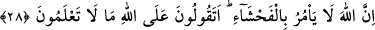

ALLAH KÖTÜLÜĞÜ DEĞİL,
ADALETİ EMREDER
28. Onlar bir kötülük yaptıkları zaman: “Babalarımızı bu yolda bulduk. Allah da
bize bunu emretti” derler. De ki: Allah kötülüğü emretmez. Allah’a karşı
bilmediğiniz şeyleri mi söylüyorsunuz?
29. De ki: Rabbim adaleti emretti. Her secde ettiğinizde yüzlerinizi O’na çevirin
ve dini yalnız Allah’a has kılarak O’na yalvarın. İlkin sizi yarattığı gibi (yine O’na)
döneceksiniz.
30. O, bir gurubu doğru yola iletti, bir guruba da sapıklık müstehak oldu. Çünkü
onlar Allah’ı bırakıp şeytanları kendilerine dost edindiler. Böyle iken kendilerinin
doğru yolda olduklarını sanıyorlar.
“Onlar” yani, Kureyş müşrikleri putlara tapmak ve çıplak olarak Kâbe’yi tavaf etmek
gibi “bir kötülük yaptıkları zaman:” kendilerini bundan alıkoymak isteyenlere
cevaben, yaptıklarının iyi ve güzel olduğuna delil olarak “Babalarımızı bu yolda
bulduk, Allah da bize böyle emretti.” derler.”
Allah Teâlâ onların ileri sürdükleri mazeretlerinin yersizliği ortada olduğu için,
reddetmeye gerek duymamıştır. Çünkü taklîd, başka hususlarda muteber olsa bile bâtıl
olduğu delil ile ortaya çıkan bir fiilin doğruluğu hakkında huccet kabul edilemez. İkinci
mazeretlerini ise Allah Teâlâ: “De ki: Allah kötülüğü emretmez” buyurarak
reddetmiştir. Çünkü Allah Teâlâ’nın âdeti, güzel amellerin yapılmasını emretmek ve iyi
hasletlerin kazanılmasını teşvik etmektir.
“Allah’a karşı bilmediğiniz şeyleri” Allah’ın onları size emrettiğini “mi
söylüyorsunuz?” Çünkü bunu bilmenin birinci yolu, Allah Teâlâ’nın kendilerine onları
emrettiğini tebliğ eden bir peygamberin aracılığı olmaksızın doğrudan onları Allah’dan
dinlemektir. Müşrikler için bunun imkânsız olduğu açıktır. İkinci yol ise peygamberler
vasıtasıyle öğrenmektir. Onlar ise peygamberlerin nübüvvetini tamamen inkar